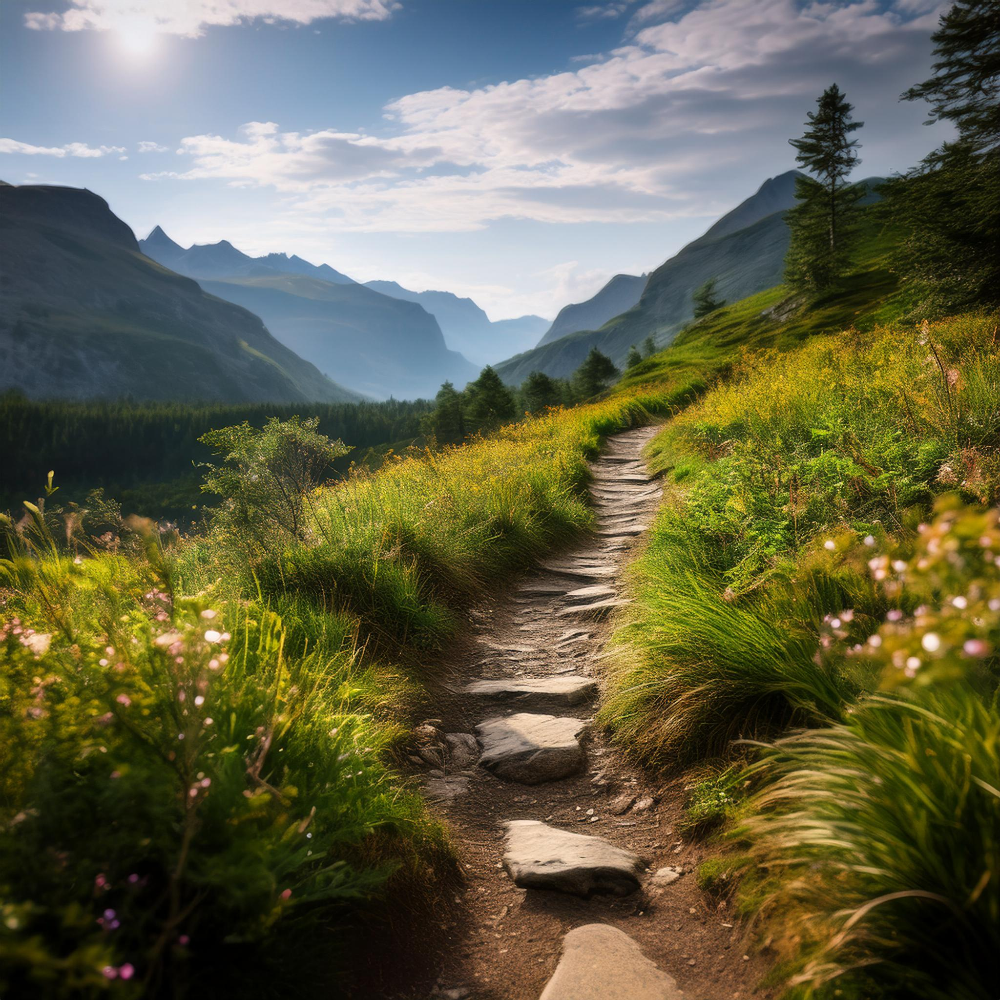
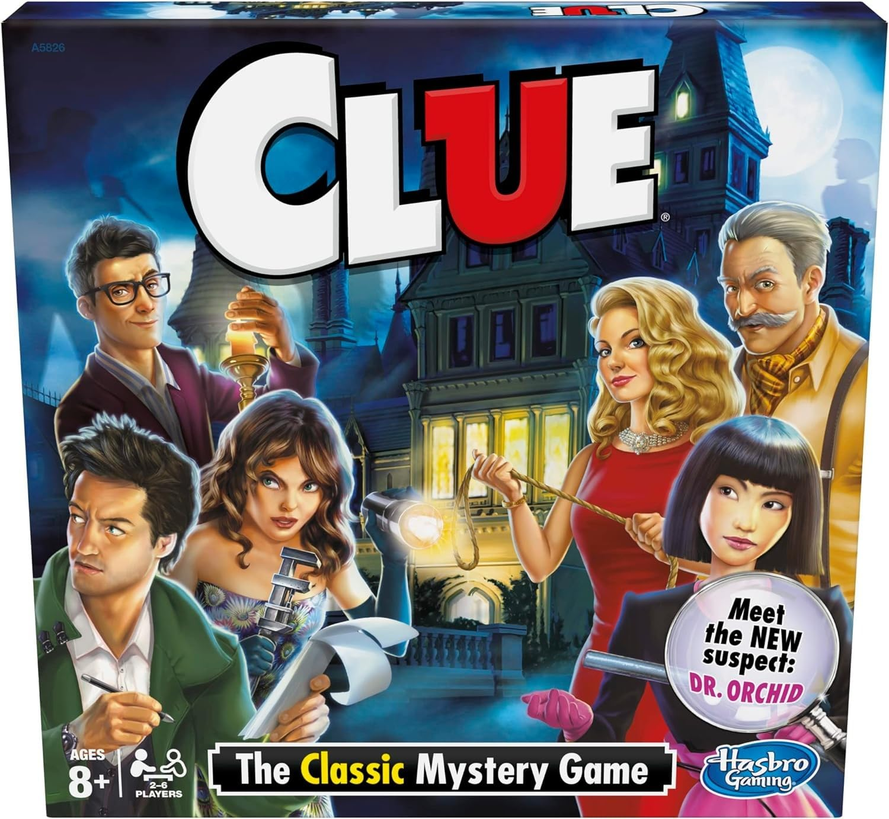

Showcase
Choose Your Own Adventure: Chery's Game
Technologies Used: HTML, CSS, JavaScript
Purpose: This is an interactive game where players make choices that affect the story. The goal is to create a fun experience where each decision leads to a different outcome.
How It Works: The game uses HTML to create the structure, CSS to style it, and JavaScript to manage the choices the player makes. The main challenge was to make sure the player's choices changed the story and made the game interesting. I used JavaScript to listen for clicks and update the game based on the player's decisions.
Business Card - Digital Design
Technologies Used: HTML, CSS
Purpose: This is a digital version of a business card that displays my name, contact info, and links to my social media profiles.
How It Works: I used HTML to create the structure of the business card, and CSS to style it. The layout is simple, using Flexbox to make sure everything looks good on different screen sizes. I also added hover effects with CSS to make the card interactive.
Imitation Project - Web Design Recreation
Technologies Used: HTML, CSS
Purpose: In this project, I recreated a website's design using HTML and CSS. The goal was to learn how to build a page that looks similar to another, and practice my web design skills.
How It Works: I focused on using HTML for the layout and CSS for the styling. I made sure the page was responsive and looked good on different screen sizes. This project helped me practice using Flexbox and CSS Grid to create a clean, organized design.
Zen Garden - CSS-Only Design

Technologies Used: HTML, CSS
Purpose: This project is a simple CSS-only design of a Zen Garden. The goal was to create a calm and peaceful design using only CSS, without any JavaScript.
How It Works: I used HTML for the basic structure and CSS for the design. The challenge was to make everything look smooth and dynamic without using JavaScript. I used CSS animations to make the water ripple and added effects like color changes to give the page a peaceful feel.